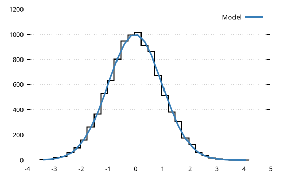

Built-in components
The GModelFit.jl provides several built-in components which may be used to build arbitrarily complex models.
OffsetSlope
An offset and slope component for 1D and 2D domains.
The constructors are defined as follows:
- 1D:
GModelFit.OffsetSlope(offset, x0, slope); - 2D:
GModelFit.OffsetSlope(offset, x0, y0, slopeX, slopeY);
The parameters are:
- 1D:
offset::Parameter: a global offset;x0::Parameter: the X coordinate of the point where the component equalsoffset. This parameter is fixed by default;slope::Parameter: the slope of the linear function;
- 2D:
offset::Parameter: a global offset;x0::Parameter: the X coordinate of the point where the component equalsoffset. This parameter is fixed by default;y0::Parameter: the Y coordinate of the point where the component equalsoffset. This parameter is fixed by default;slopeX::Parameter(only 2D): the slope of the plane along the X direction;slopeY::Parameter(only 2D): the slope of the plane along the Y direction;
Example
using GModelFit
# Define a linear model using the OffsetSlope component
model = Model(:linear => GModelFit.OffsetSlope(2, 0, 0.5))
# Fit model against data
data = Measures([4.01, 7.58, 12.13, 19.78, 29.04], 0.4)
bestfit, stats = fit(model, data)(Components:
╭───────────┬────────────────┬───────┬─────────────┬───────────┬───────────┬───────────┬─────────╮
│ Component │ Type │ #Free │ Eval. count │ Min │ Max │ Mean │ NaN/Inf │
├───────────┼────────────────┼───────┼─────────────┼───────────┼───────────┼───────────┼─────────┤
│ linear │ OffsetSlope_1D │ 2 │ 42 │ 2.056 │ 26.96 │ 14.51 │ 0 │
╰───────────┴────────────────┴───────┴─────────────┴───────────┴───────────┴───────────┴─────────╯
Parameters:
╭───────────┬────────────────┬────────┬──────────┬───────────┬───────────┬────────┬───────╮
│ Component │ Type │ Param. │ Range │ Value │ Uncert. │ Actual │ Patch │
├───────────┼────────────────┼────────┼──────────┼───────────┼───────────┼────────┼───────┤
│ linear │ OffsetSlope_1D │ offset │ -Inf:Inf │ -4.17 │ 2.361 │ │ │
│ │ │ x0 │ -Inf:Inf │ 0 │ (fixed) │ │ │
│ │ │ slope │ -Inf:Inf │ 6.226 │ 0.7119 │ │ │
╰───────────┴────────────────┴────────┴──────────┴───────────┴───────────┴────────┴───────╯
, Fit results: #data: 5, #free pars: 2, red. fit stat.: 31.671, Status: OK
)The best fit parameter values can be retrieved with:
println("Best fit values:")
println("b: ", bestfit[:linear].offset.val, " ± ", bestfit[:linear].offset.unc)
println("m: ", bestfit[:linear].slope.val , " ± ", bestfit[:linear].slope.unc)Best fit values:
b: -4.1699999993610115 ± 2.3609709866629576
m: 6.225999999809595 ± 0.7118595367099604A similar example in 2D is as follows:
using GModelFit
# Define a linear model using the OffsetSlope component
model = Model(:plane => GModelFit.OffsetSlope(2, 0, 0, 0.5, 0.5))
# Fit model against data
dom = CartesianDomain(1:5, 1:5)
data = Measures(dom, [ 3.08403 3.46719 4.07612 4.25611 5.04716
3.18361 3.88546 4.52338 5.12838 5.7864
3.80219 4.90894 5.24232 5.06982 6.29545
4.34554 4.68698 5.51505 5.69245 6.35409
4.643 5.91825 6.18011 6.67073 7.01467], 0.25)
bestfit, stats = fit(model, data)(Components:
╭───────────┬────────────────┬───────┬─────────────┬───────────┬───────────┬───────────┬─────────╮
│ Component │ Type │ #Free │ Eval. count │ Min │ Max │ Mean │ NaN/Inf │
├───────────┼────────────────┼───────┼─────────────┼───────────┼───────────┼───────────┼─────────┤
│ plane │ OffsetSlope_2D │ 3 │ 58 │ 2.915 │ 7.067 │ 4.991 │ 0 │
╰───────────┴────────────────┴───────┴─────────────┴───────────┴───────────┴───────────┴─────────╯
Parameters:
╭───────────┬────────────────┬────────┬──────────┬───────────┬───────────┬────────┬───────╮
│ Component │ Type │ Param. │ Range │ Value │ Uncert. │ Actual │ Patch │
├───────────┼────────────────┼────────┼──────────┼───────────┼───────────┼────────┼───────┤
│ plane │ OffsetSlope_2D │ offset │ -Inf:Inf │ 1.877 │ 0.1572 │ │ │
│ │ │ x0 │ -Inf:Inf │ 0 │ (fixed) │ │ │
│ │ │ y0 │ -Inf:Inf │ 0 │ (fixed) │ │ │
│ │ │ slopeX │ -Inf:Inf │ 0.5016 │ 0.03514 │ │ │
│ │ │ slopeY │ -Inf:Inf │ 0.5366 │ 0.03514 │ │ │
╰───────────┴────────────────┴────────┴──────────┴───────────┴───────────┴────────┴───────╯
, Fit results: #data: 25, #free pars: 3, red. fit stat.: 0.98794, Status: OK
)Polynomial
A n-th degree polynomial function (n > 1) for 1D domains.
The constructor is defined as follows:
GModelFit.Polynomial(p1, p2, ...); wherep1,p2, etc. are the guess values for the coefficients of each degree of the polynomial.
The parameters are accessible as p0, p1, etc.
Example
using GModelFit
# Define domain and a linear model using the Polynomial component
model = Model(GModelFit.Polynomial(2, 0.5))
# Fit model against data
data = Measures([4.01, 7.58, 12.13, 19.78, 29.04], 0.4)
bestfit, stats = fit(model, data)(Components:
╭───────────┬────────────┬───────┬─────────────┬───────────┬───────────┬───────────┬─────────╮
│ Component │ Type │ #Free │ Eval. count │ Min │ Max │ Mean │ NaN/Inf │
├───────────┼────────────┼───────┼─────────────┼───────────┼───────────┼───────────┼─────────┤
│ main │ Polynomial │ 2 │ 42 │ 2.056 │ 26.96 │ 14.51 │ 0 │
╰───────────┴────────────┴───────┴─────────────┴───────────┴───────────┴───────────┴─────────╯
Parameters:
╭───────────┬────────────┬────────┬──────────┬───────────┬───────────┬────────┬───────╮
│ Component │ Type │ Param. │ Range │ Value │ Uncert. │ Actual │ Patch │
├───────────┼────────────┼────────┼──────────┼───────────┼───────────┼────────┼───────┤
│ main │ Polynomial │ p0 │ -Inf:Inf │ -4.17 │ 2.361 │ │ │
│ │ │ p1 │ -Inf:Inf │ 6.226 │ 0.7119 │ │ │
╰───────────┴────────────┴────────┴──────────┴───────────┴───────────┴────────┴───────╯
, Fit results: #data: 5, #free pars: 2, red. fit stat.: 31.671, Status: OK
)Note that the numerical results are identical to the previous example involving the OffsetSlope component. Also note that the default name for a component (if none is provided) is :main. To use a 2nd degree polynomial we can simply replace the :main component with a new one:
model[:main] = GModelFit.Polynomial(2, 0.5, 1)
bestfit, stats = fit(model, data)(Components:
╭───────────┬────────────┬───────┬─────────────┬───────────┬───────────┬───────────┬─────────╮
│ Component │ Type │ #Free │ Eval. count │ Min │ Max │ Mean │ NaN/Inf │
├───────────┼────────────┼───────┼─────────────┼───────────┼───────────┼───────────┼─────────┤
│ main │ Polynomial │ 3 │ 65 │ 4.125 │ 29.03 │ 14.51 │ 0 │
╰───────────┴────────────┴───────┴─────────────┴───────────┴───────────┴───────────┴─────────╯
Parameters:
╭───────────┬────────────┬────────┬──────────┬───────────┬───────────┬────────┬───────╮
│ Component │ Type │ Param. │ Range │ Value │ Uncert. │ Actual │ Patch │
├───────────┼────────────┼────────┼──────────┼───────────┼───────────┼────────┼───────┤
│ main │ Polynomial │ p0 │ -Inf:Inf │ 3.07 │ 0.7208 │ │ │
│ │ │ p1 │ -Inf:Inf │ 0.02029 │ 0.5493 │ │ │
│ │ │ p2 │ -Inf:Inf │ 1.034 │ 0.08981 │ │ │
╰───────────┴────────────┴────────┴──────────┴───────────┴───────────┴────────┴───────╯
, Fit results: #data: 5, #free pars: 3, red. fit stat.: 0.70582, Status: OK
)Gaussian
A normalized Gaussian component for 1D and 2D domains.
The constructors are defined as follows:
- 1D:
GModelFit.Gaussian(norm, center, sigma); - 2D:
GModelFit.Gaussian(norm, centerX, centerY, sigma)(impliessigmaX=sigmaY,angle=0); - 2D:
GModelFit.Gaussian(norm, centerX, centerY, sigmaX, sigmaY, angle);
The parameters are:
1D:
norm::Parameter: the area below the Gaussian function;center::Parameter: the location of the center of the Gaussian;sigma::Parameter: the width the Gaussian;
2D:
norm::Parameter: the volume below the Gaussian function;centerX::Parameter: the X coordinate of the center of the Gaussian;centerY::Parameter: the Y coordinate of the center of the Gaussian;sigmaX::Parameter: the width the Gaussian along the X direction (whenangle=0);sigmaY::Parameter: the width the Gaussian along the Y direction (whenangle=0);angle::Parameter: the rotation angle (in degrees) of the Gaussian.
Example
using GModelFit
# Define a model with a single Gaussian component
model = Model(GModelFit.Gaussian(1, 3, 0.5))
# Fit model against data
data = Measures([0, 0.3, 6.2, 25.4, 37.6, 23., 7.1, 0.4, 0], 0.6)
bestfit, stats = fit(model, data)(Components:
╭───────────┬─────────────┬───────┬─────────────┬───────────┬───────────┬───────────┬─────────╮
│ Component │ Type │ #Free │ Eval. count │ Min │ Max │ Mean │ NaN/Inf │
├───────────┼─────────────┼───────┼─────────────┼───────────┼───────────┼───────────┼─────────┤
│ main │ Gaussian_1D │ 3 │ 101 │ 0.02924 │ 37.6 │ 11.17 │ 0 │
╰───────────┴─────────────┴───────┴─────────────┴───────────┴───────────┴───────────┴─────────╯
Parameters:
╭───────────┬─────────────┬────────┬──────────┬───────────┬───────────┬────────┬───────╮
│ Component │ Type │ Param. │ Range │ Value │ Uncert. │ Actual │ Patch │
├───────────┼─────────────┼────────┼──────────┼───────────┼───────────┼────────┼───────┤
│ main │ Gaussian_1D │ norm │ 0:Inf │ 100.5 │ 1.445 │ │ │
│ │ │ center │ -Inf:Inf │ 4.965 │ 0.01772 │ │ │
│ │ │ sigma │ 0:Inf │ 1.066 │ 0.01766 │ │ │
╰───────────┴─────────────┴────────┴──────────┴───────────┴───────────┴────────┴───────╯
, Fit results: #data: 9, #free pars: 3, red. fit stat.: 1.0251, Status: OK
)A very common problem is to fit the histogram of a distribution with a Gaussian model. The following example shows how to fit such Gaussian model to a distribution generated with Random.randn, and how to plot the results using Gnuplot.jl:
using Random, GModelFit, Gnuplot
# Calculate histogram of the distribution
hh = hist(randn(10000), bs=0.25)
# Define domain and data and fit a model
dom = Domain(hist_bins(hh, side=:center, pad=false))
data = Measures(dom, hist_weights(hh, pad=false), 1.)
model = Model(GModelFit.Gaussian(1e3, 0, 1))
bestfit, stats = fit(model, data)(Components:
╭───────────┬─────────────┬───────┬─────────────┬───────────┬───────────┬───────────┬─────────╮
│ Component │ Type │ #Free │ Eval. count │ Min │ Max │ Mean │ NaN/Inf │
├───────────┼─────────────┼───────┼─────────────┼───────────┼───────────┼───────────┼─────────┤
│ main │ Gaussian_1D │ 3 │ 64 │ 0.3648 │ 1001 │ 311.6 │ 0 │
╰───────────┴─────────────┴───────┴─────────────┴───────────┴───────────┴───────────┴─────────╯
Parameters:
╭───────────┬─────────────┬────────┬──────────┬───────────┬───────────┬────────┬───────╮
│ Component │ Type │ Param. │ Range │ Value │ Uncert. │ Actual │ Patch │
├───────────┼─────────────┼────────┼──────────┼───────────┼───────────┼────────┼───────┤
│ main │ Gaussian_1D │ norm │ 0:Inf │ 2493 │ 16.82 │ │ │
│ │ │ center │ -Inf:Inf │ 0.01383 │ 0.007727 │ │ │
│ │ │ sigma │ 0:Inf │ 0.9922 │ 0.007727 │ │ │
╰───────────┴─────────────┴────────┴──────────┴───────────┴───────────┴────────┴───────╯
, Fit results: #data: 32, #free pars: 3, red. fit stat.: 214.38, Status: OK
)@gp hh coords(dom) bestfit() "w l t 'Model' lw 3"
A similar problem in 2D can be handled as follows:
using Random, GModelFit, Gnuplot
# Calculate histogram of the distribution
hh = hist(1 .+ randn(10000), 2 .* randn(10000))
# Define domain and data and fit a model
dom = CartesianDomain(hist_bins(hh, 1), hist_bins(hh, 2))
data = Measures(dom, hist_weights(hh) .* 1., 1.)
model = Model(GModelFit.Gaussian(1e3, 0, 0, 1, 1, 0))
bestfit, stats = fit(model, data)(Components:
╭───────────┬─────────────┬───────┬─────────────┬───────────┬───────────┬───────────┬─────────╮
│ Component │ Type │ #Free │ Eval. count │ Min │ Max │ Mean │ NaN/Inf │
├───────────┼─────────────┼───────┼─────────────┼───────────┼───────────┼───────────┼─────────┤
│ main │ Gaussian_2D │ 6 │ 197 │ 0.0004761 │ 370.2 │ 44.16 │ 0 │
╰───────────┴─────────────┴───────┴─────────────┴───────────┴───────────┴───────────┴─────────╯
Parameters:
╭───────────┬─────────────┬─────────┬──────────┬───────────┬───────────┬────────┬───────╮
│ Component │ Type │ Param. │ Range │ Value │ Uncert. │ Actual │ Patch │
├───────────┼─────────────┼─────────┼──────────┼───────────┼───────────┼────────┼───────┤
│ main │ Gaussian_2D │ norm │ 0:Inf │ 4924 │ 36.06 │ │ │
│ │ │ centerX │ -Inf:Inf │ 0.9973 │ 0.007308 │ │ │
│ │ │ centerY │ -Inf:Inf │ -0.02374 │ 0.01488 │ │ │
│ │ │ sigmaX │ 0:Inf │ 2.032 │ 0.01488 │ │ │
│ │ │ sigmaY │ 0:Inf │ 0.9977 │ 0.007308 │ │ │
│ │ │ angle │ -Inf:Inf │ 4591 │ 0.3841 │ │ │
╰───────────┴─────────────┴─────────┴──────────┴───────────┴───────────┴────────┴───────╯
, Fit results: #data: 225, #free pars: 6, red. fit stat.: 51.535, Status: OK
)FComp
As anticipated in Basic concepts and data types any Julia function can be used as a component to evaluate. The corresponding component type is FComp, whose constructors are defined as follows:
FComp(funct::Function, deps=Symbol[]; par1=guess1, par2=guess2, ...)
FComp(funct::FunctDesc)In the first constructor funct is the Julia function, deps is a vector of dependencies (either the domain dimensions or other component names) and par1, par2 etc. are the named parameters with their corresponding initial guess values.
Example
using GModelFit
# Define a simple Julia function to evaluate a linear relationship
myfunc(x, b, m) = b .+ x .* m
# Define a model with a `FComp` wrapping the previously defined function.
# Also specify the initial guess parameters.
model = Model(:linear => GModelFit.FComp(myfunc, [:x], b=2, m=0.5))
# Fit model against a data set
data = Measures([4.01, 7.58, 12.13, 19.78, 29.04], 0.4)
bestfit, stats = fit(model, data)(Components:
╭───────────┬───────┬───────┬─────────────┬───────────┬───────────┬───────────┬─────────╮
│ Component │ Type │ #Free │ Eval. count │ Min │ Max │ Mean │ NaN/Inf │
├───────────┼───────┼───────┼─────────────┼───────────┼───────────┼───────────┼─────────┤
│ linear │ FComp │ 2 │ 52 │ 2.056 │ 26.96 │ 14.51 │ 0 │
╰───────────┴───────┴───────┴─────────────┴───────────┴───────────┴───────────┴─────────╯
Parameters:
╭───────────┬───────┬────────┬──────────┬───────────┬───────────┬────────┬───────╮
│ Component │ Type │ Param. │ Range │ Value │ Uncert. │ Actual │ Patch │
├───────────┼───────┼────────┼──────────┼───────────┼───────────┼────────┼───────┤
│ linear │ FComp │ b │ -Inf:Inf │ -4.17 │ 2.361 │ │ │
│ │ │ m │ -Inf:Inf │ 6.226 │ 0.7119 │ │ │
╰───────────┴───────┴────────┴──────────┴───────────┴───────────┴────────┴───────╯
, Fit results: #data: 5, #free pars: 2, red. fit stat.: 31.671, Status: OK
)In the second constructor a GModelFit.FunctDesc object is accepted, as generated by the @fd macro). The function is typically a mathematical expression combining any number of parameters and/or other component evaluations within the same model. The expression should be given in the form:
@fd (x, [y, [further domain dimensions...],]
[comp1, [comp2, [further components ...],]]
[par1=guess1, [par2=guess2, [further parameters]]]) ->
(mathematical expression)where the mathematical expression returns a Vector{Float64} with the same length as the model domain.
The previous example can be rewritten as follows:
using GModelFit
# Define a linear model (with initial guess parameters)
model = Model(:linear => @fd (x, b=2, m=0.5) -> (b .+ x .* m))
# Fit model against data
data = Measures([4.01, 7.58, 12.13, 19.78, 29.04], 0.4)
bestfit, stats = fit(model, data)(Components:
╭───────────┬───────┬───────┬─────────────┬───────────┬───────────┬───────────┬─────────╮
│ Component │ Type │ #Free │ Eval. count │ Min │ Max │ Mean │ NaN/Inf │
├───────────┼───────┼───────┼─────────────┼───────────┼───────────┼───────────┼─────────┤
│ linear │ FComp │ 2 │ 52 │ 2.056 │ 26.96 │ 14.51 │ 0 │
╰───────────┴───────┴───────┴─────────────┴───────────┴───────────┴───────────┴─────────╯
Parameters:
╭───────────┬───────┬────────┬──────────┬───────────┬───────────┬────────┬───────╮
│ Component │ Type │ Param. │ Range │ Value │ Uncert. │ Actual │ Patch │
├───────────┼───────┼────────┼──────────┼───────────┼───────────┼────────┼───────┤
│ linear │ FComp │ b │ -Inf:Inf │ -4.17 │ 2.361 │ │ │
│ │ │ m │ -Inf:Inf │ 6.226 │ 0.7119 │ │ │
╰───────────┴───────┴────────┴──────────┴───────────┴───────────┴────────┴───────╯
, Fit results: #data: 5, #free pars: 2, red. fit stat.: 31.671, Status: OK
)Note that a FComp component can be added to a model without explicitly invoking its constructor when the @fd macro is used.
The evaluation of a FComp component may also involve the outcomes from other components. Continuing from previous example, whose fit was clearly a poor one, we may add a quadratic term to the previously defined linear component:
model[:quadratic] = @fd (x, linear, p2=1) -> (linear .+ p2 .* x.^2)
bestfit, stats = fit(model, data)(Components:
╭───────────┬───────┬───────┬─────────────┬───────────┬───────────┬───────────┬─────────╮
│ Component │ Type │ #Free │ Eval. count │ Min │ Max │ Mean │ NaN/Inf │
├───────────┼───────┼───────┼─────────────┼───────────┼───────────┼───────────┼─────────┤
│ quadratic │ FComp │ 1 │ 76 │ 4.125 │ 29.03 │ 14.51 │ 0 │
│ └─╴linear │ FComp │ 2 │ 76 │ 3.09 │ 3.171 │ 3.131 │ 0 │
╰───────────┴───────┴───────┴─────────────┴───────────┴───────────┴───────────┴─────────╯
Parameters:
╭───────────┬───────┬────────┬──────────┬───────────┬───────────┬────────┬───────╮
│ Component │ Type │ Param. │ Range │ Value │ Uncert. │ Actual │ Patch │
├───────────┼───────┼────────┼──────────┼───────────┼───────────┼────────┼───────┤
│ linear │ FComp │ b │ -Inf:Inf │ 3.07 │ 0.7208 │ │ │
│ │ │ m │ -Inf:Inf │ 0.02029 │ 0.5493 │ │ │
├───────────┼───────┼────────┼──────────┼───────────┼───────────┼────────┼───────┤
│ quadratic │ FComp │ p2 │ -Inf:Inf │ 1.034 │ 0.08981 │ │ │
╰───────────┴───────┴────────┴──────────┴───────────┴───────────┴────────┴───────╯
, Fit results: #data: 5, #free pars: 3, red. fit stat.: 0.70582, Status: OK
)The keywords given when defining the function are interpreted as component parameters, hence their properties can be retrieved with:
println("Best fit values:")
println("b: ", bestfit[:linear].b.val , " ± ", bestfit[:linear].b.unc)
println("m: ", bestfit[:linear].m.val , " ± ", bestfit[:linear].m.unc)
println("p2: ", bestfit[:quadratic].p2.val, " ± ", bestfit[:quadratic].p2.unc)Best fit values:
b: 3.0699999992111633 ± 0.7207527811763804
m: 0.02028571492419867 ± 0.5492615451533973
p2: 1.0342857141828363 ± 0.0898138664922902FCompv
Just like FComp, also FCompv is a wrapper for a standard Julia function whose evaluation is performed using the function itself. However, FCompv parameters are passed to the function as a single vector of floats. The FCompv constructors are defined as follows:
FComp(funct::Function, guess::Vector{Float64})
FComp(funct::Function, deps::Vector{Symbol}, guess::Vector{Float64})where funct is the Julia function, deps is an optional vector of dependencies (either the domain dimensions or other component names) and guess is a vector of initial guess values.
Example
The following example shows how to estimate the vector x satisfying the linear equation Ax = b, where A and b are:
A = [1.43 2.17 -0.38
0.21 -0.33 -1.71
-1.23 -1.16 0.83
-2.09 0.44 0.64]
b = [3.14, -8.48, 0.53, 0.54]To define the model we will rewrite the equation as Ax - b = 0, and define a model as follows
model = Model(GModelFit.FCompv(x -> A*x - b,
[1, 1, 1]))where x = [1, 1, 1] are the initial guess values for the three parameters in the fit. In this case the empirical data to compare the model to are just zeros, and we will assume a constant uncertainty of 1 for all samples:
data = Measures(fill(0., length(b)), 1.)
bestfit, stats = fit(model, data)(Components:
╭───────────┬────────┬───────┬─────────────┬───────────┬───────────┬───────────┬─────────╮
│ Component │ Type │ #Free │ Eval. count │ Min │ Max │ Mean │ NaN/Inf │
├───────────┼────────┼───────┼─────────────┼───────────┼───────────┼───────────┼─────────┤
│ main │ FCompv │ 3 │ 57 │ -0.01477 │ 0.1038 │ 0.04577 │ 0 │
╰───────────┴────────┴───────┴─────────────┴───────────┴───────────┴───────────┴─────────╯
Parameters:
╭───────────┬────────┬────────┬──────────┬───────────┬───────────┬────────┬───────╮
│ Component │ Type │ Param. │ Range │ Value │ Uncert. │ Actual │ Patch │
├───────────┼────────┼────────┼──────────┼───────────┼───────────┼────────┼───────┤
│ main │ FCompv │ p1 │ -Inf:Inf │ 1.52 │ 0.06207 │ │ │
│ │ │ p2 │ -Inf:Inf │ 1.328 │ 0.05828 │ │ │
│ │ │ p3 │ -Inf:Inf │ 4.871 │ 0.07574 │ │ │
╰───────────┴────────┴────────┴──────────┴───────────┴───────────┴────────┴───────╯
, Fit results: #data: 4, #free pars: 3, red. fit stat.: 0.015942, Status: OK
)SumReducer
A component calculating the element-wise sum of a number of other components.
The SumReducer constructor is defined as follows:
SumReducer(args::AbstractSet{Symbol})
SumReducer(args::Vector{Symbol})
SumReducer(args::Vararg{Symbol})where the Symbols represent the component names
The SumReducer component has no parameter.
Example
using GModelFit
# Define domain and a linear model (with initial guess parameters)
model = Model(:linear => @fd (x, b=2, m=0.5) -> (b .+ x .* m))
# Add a quadratic component to the model
model[:quadratic] = @fd (x, p2=1) -> (p2 .* x.^2)
# The total model is the sum of `linear` and `quadratic`
model[:main] = SumReducer(:linear, :quadratic)
# Fit model against data
dom = Domain(1:5)
data = Measures(dom, [4.01, 7.58, 12.13, 19.78, 29.04], 0.4)
bestfit, stats = fit(model, data)(Components:
╭──────────────┬────────────┬───────┬─────────────┬───────────┬───────────┬───────────┬─────────╮
│ Component │ Type │ #Free │ Eval. count │ Min │ Max │ Mean │ NaN/Inf │
├──────────────┼────────────┼───────┼─────────────┼───────────┼───────────┼───────────┼─────────┤
│ main │ SumReducer │ │ 76 │ 4.125 │ 29.03 │ 14.51 │ 0 │
│ ├─╴linear │ FComp │ 2 │ 76 │ 3.09 │ 3.171 │ 3.131 │ 0 │
│ └─╴quadratic │ FComp │ 1 │ 76 │ 1.034 │ 25.86 │ 11.38 │ 0 │
╰──────────────┴────────────┴───────┴─────────────┴───────────┴───────────┴───────────┴─────────╯
Parameters:
╭───────────┬───────┬────────┬──────────┬───────────┬───────────┬────────┬───────╮
│ Component │ Type │ Param. │ Range │ Value │ Uncert. │ Actual │ Patch │
├───────────┼───────┼────────┼──────────┼───────────┼───────────┼────────┼───────┤
│ linear │ FComp │ b │ -Inf:Inf │ 3.07 │ 0.7208 │ │ │
│ │ │ m │ -Inf:Inf │ 0.02029 │ 0.5493 │ │ │
├───────────┼───────┼────────┼──────────┼───────────┼───────────┼────────┼───────┤
│ quadratic │ FComp │ p2 │ -Inf:Inf │ 1.034 │ 0.08981 │ │ │
╰───────────┴───────┴────────┴──────────┴───────────┴───────────┴────────┴───────╯
, Fit results: #data: 5, #free pars: 3, red. fit stat.: 0.70582, Status: OK
)